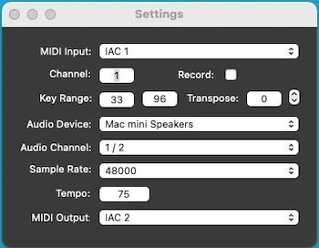

|
|
StandaloneHost Help |

Preferences

MIDI Input: Select the input MIDI port. Added and deleted MIDI ports are automatically detected by StandaloneHost. If a previously selected port is not connected next time StandaloneHost is used, it will be marked as Inactive until the port is detected. All incoming MIDI system messages, including system exclusive ("sysex"), song position pointer, song select, MIDI clock, sequencer start/continue/stop, active sensing, and system reset are ignored.
Channel: Select the MIDI input channel (1 - 16). Set channel to 0 to respond to all channels.
Record: Check this box to record the unmodified MIDI data from the input port. The data will be stored in a Type 1 Standard MIDI File with a time signature of 4/4 and with the tempo set below. A new file will be saved after 5 seconds of inactivity or when about 100,000 events have been stored. Each file is placed in your home folder in the Music/StandaloneHost folder. The file name format is "synth_name yyyy-mn-dd at hh-mm-ss.mid", where yyyy is the year, mn is the month, dd is the day, hh is the hour, mm is the minutes, and ss is the seconds. Uncheck this box to stop recording. Sysex (System Exclusive), MIDI Clock, and Active Sensing messages are not recorded.
Key Range: Select the note number range for playing the soft synth.
Transpose: Select a transposition amount for the notes that are played by the soft synth.
Audio Device: Select the output audio device. Added and deleted audio devices are not currently detected by StandaloneHost, so it must be restarted to use an added device.
Audio Channel: Select the output audio channel.
Sample Rate: Select the audio sample rate (44100 or 48000).
Tempo: Set the tempo in beats per minute (BPM) for soft synths that have features such as arpeggiators that rely on host tempo. This field is also used to set the tempo of the SMF files created when the Record box is checked.
MIDI Output: Select the output MIDI port. Added and deleted MIDI ports are automatically detected by StandaloneHost. If a previously selected port is not connected next time StandaloneHost is used, it will be marked as Inactive until the port is detected. MIDI data will only be output on this port if the hosted synth outputs MIDI data. Many will not output anything. Some that do include the Full Bucket soft synths (FB-3100, etc.), which will echo the incoming MIDI data to the output if "Global MIDI Settings...MIDI Thru" in the synth menu is checked.